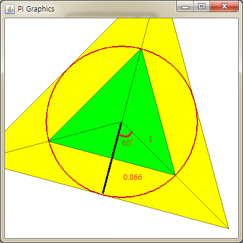

public class Archimedes {
public double approximatePi(int numSides) {
double d = 2 * Math.PI / numSides / 2; // 2*Math.PI is 360 degrees.
return numSides * Math.sin(d);
}
}
Explanation
(반지름은 1로 가정)
원 안에 삼각형을 그린다. 원 점과 한 변의 중앙을 직선으로 그어서 작은 직각삼각형을 만든다. 원 안 쪽 각으로 sin하면 sin 60˚ = sin 1.047 (radian) = 0.866 (60도인 이유 : 원 내부는 총 360도. 3등분하면 120도. 직각으로 나눴으니 60도 이다.) 도로 계산하면 나눠지지 않는 수가 있어서 (예 : 7각형, 11각형 등등) radian으로 바꿔줘서 계산한다. 1(빗변의 길이) * sin 60˚ (구하려는변/빗변의길이) = 0.866 이 변의 값이 된다.
(0.866 * 2) * 3 = 5.196152422706632 이다. 이것이 삼각형의 둘레값이다. 원주율에 대한 비를 구하는 것이므로 5.196152422706632 / 2를 하면 2.598076211353316 가 된다. 이런 식으로 사각형, 오각형, 다각형에 대해서 값을 구해나가면 된다.
식 원 둘레(지름 * PI) / 지름 = PI (원주율)

References